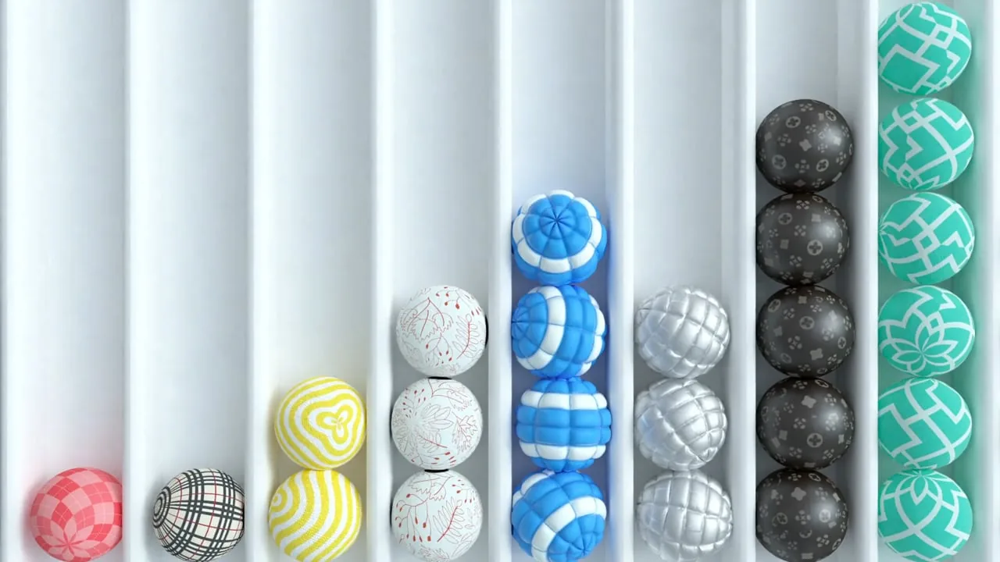
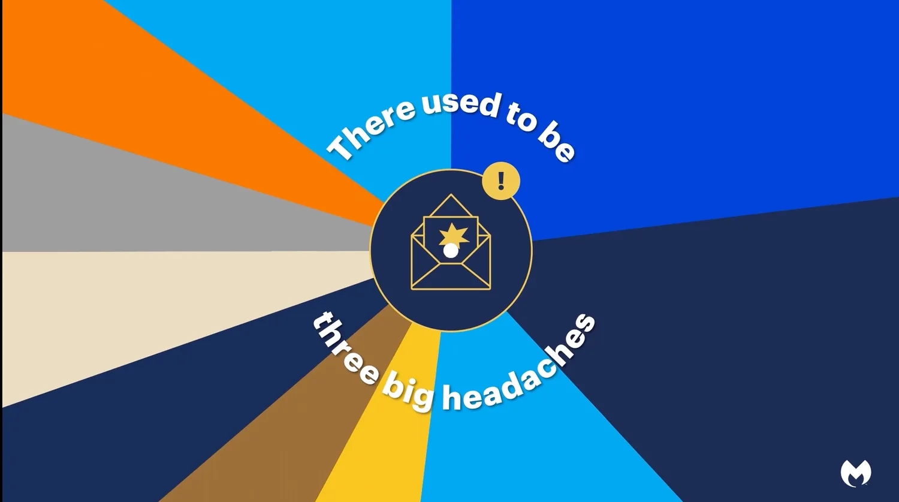
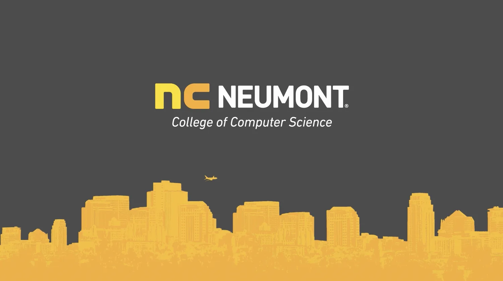
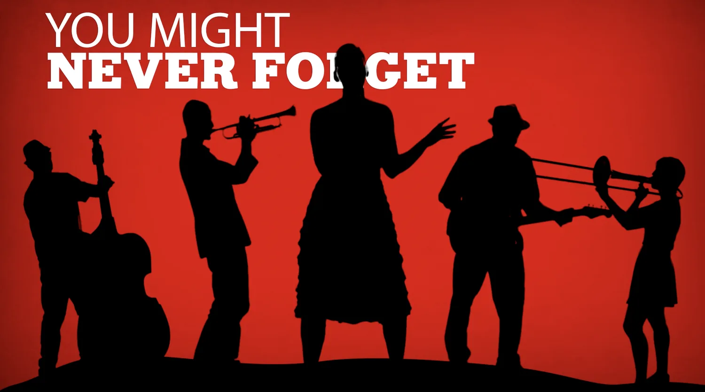
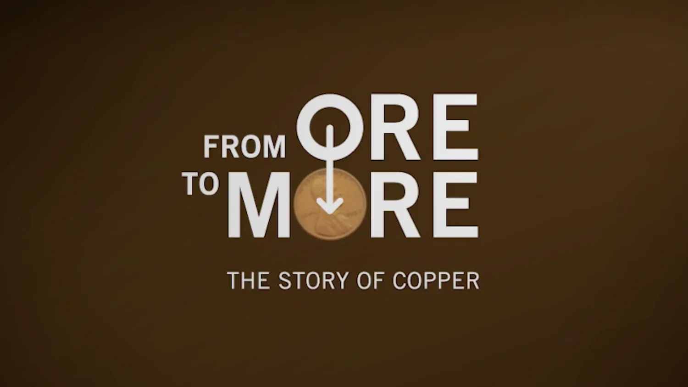

1:29Publicis Sapient + Adobe overview
How do you tell a customer success story when you can’t name the customer? Here’s one idea.
Scripts and story direction for brand films, explainers, customer stories, and social video.

1:29How do you tell a customer success story when you can’t name the customer? Here’s one idea.

0:45This series of three short social videos highlights key findings from Malwarebytes’ 2022 Threat Review and encourages viewers to download the report.

2:59Sometimes, it’s better to let people tell their own stories in their own words (with a bit of expert direction). This piece weaves perspectives from Neumont faculty, staff, and students into an authentic story about who they are and the experience they offer.
Describing complex technical products and concepts with approachable, conversational, jargon-free language is deceptively difficult. It’s also what we do best.

2:04Ambitious goals and a limited budget gave us the perfect opportunity to get creative and have some fun with this video promoting the University of Utah Arts Pass.

6:00Rio Tinto has been using this award-winning video—which describes the process of turning raw copper ore into useful products—in classrooms and at their visitor’s center for more than 8 years.